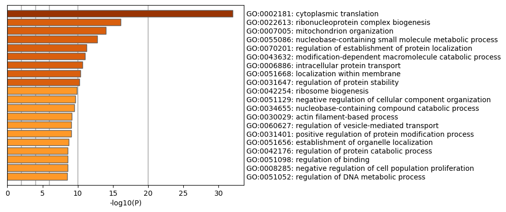
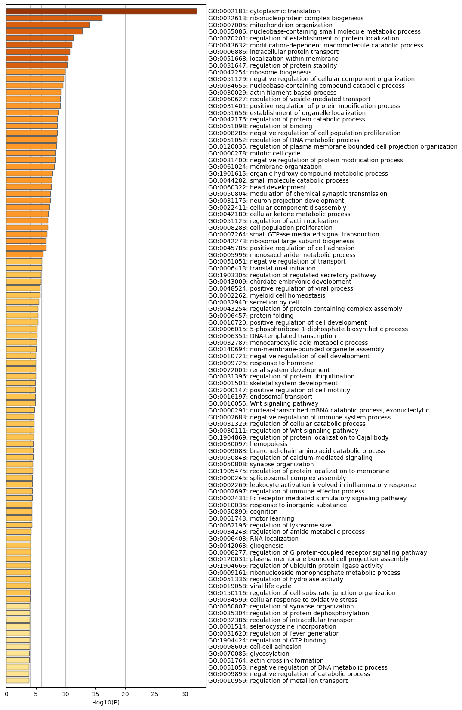
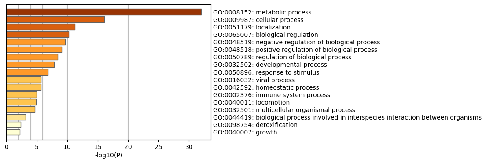
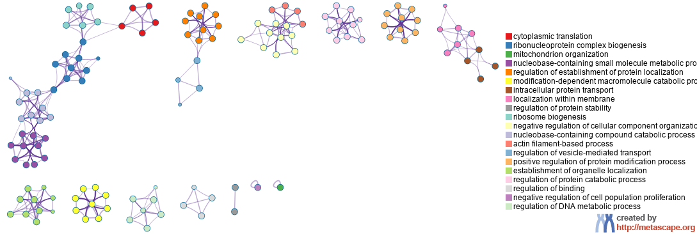
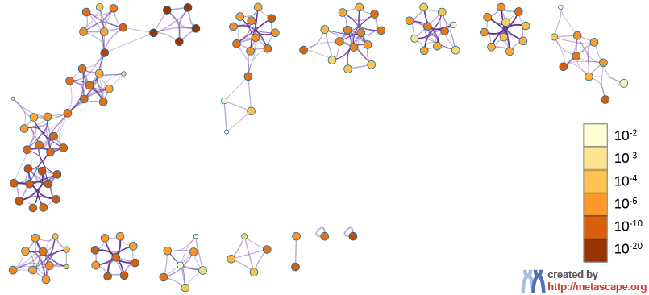

Metascape Gene List Analysis Report
metascape.org1Bar Graph Summary
Figure 1. Bar graph of enriched terms across input gene lists, colored by p-values.
|
 |
|
|
| Metascape only visualizes the top 20 clusters. Up to 100 enriched clusters can be viewed here.  |
| The top-level Gene Ontology biological processes can be viewed here.  |
{kind=link}
{kind=link}
Gene Lists
User-provided gene identifiers are first converted into their corresponding H. sapiens Entrez gene IDs using the latest version of the database (last updated on 2024-01-01). If multiple identifiers correspond to the same Entrez gene ID, they will be considered as a single Entrez gene ID in downstream analyses. The gene lists are summarized in Table 1.Table 1. Statistics of input gene lists.
| Name | Total | Unique |
|---|---|---|
| MyList | 1971 | 1967 |
Pathway and Process Enrichment Analysis
For each given gene list, pathway and process enrichment analysis have been carried out with the following ontology sources: GO Biological Processes. All genes in the genome have been used as the enrichment background. Terms with a p-value < 0.01, a minimum count of 3, and an enrichment factor > 1.5 (the enrichment factor is the ratio between the observed counts and the counts expected by chance) are collected and grouped into clusters based on their membership similarities. More specifically, p-values are calculated based on the cumulative hypergeometric distribution2, and q-values are calculated using the Benjamini-Hochberg procedure to account for multiple testings3. Kappa scores4 are used as the similarity metric when performing hierarchical clustering on the enriched terms, and sub-trees with a similarity of > 0.3 are considered a cluster. The most statistically significant term within a cluster is chosen to represent the cluster.Table 2. Top 20 clusters with their representative enriched terms (one per cluster). "Count" is the number of genes in the user-provided lists with membership in the given ontology term. "%" is the percentage of all of the user-provided genes that are found in the given ontology term (only input genes with at least one ontology term annotation are included in the calculation). "Log10(P)" is the p-value in log base 10. "Log10(q)" is the multi-test adjusted p-value in log base 10.
| GO | Category | Description | Count | % | Log10(P) | Log10(q) |
|---|---|---|---|---|---|---|
| GO:0002181 | GO Biological Processes | cytoplasmic translation | 55 | 2.81 | -32.02 | -27.85 |
| GO:0022613 | GO Biological Processes | ribonucleoprotein complex biogenesis | 85 | 4.34 | -16.06 | -12.66 |
| GO:0007005 | GO Biological Processes | mitochondrion organization | 74 | 3.78 | -13.97 | -10.64 |
| GO:0055086 | GO Biological Processes | nucleobase-containing small molecule metabolic process | 89 | 4.54 | -12.77 | -9.49 |
| GO:0070201 | GO Biological Processes | regulation of establishment of protein localization | 79 | 4.03 | -11.26 | -8.23 |
| GO:0043632 | GO Biological Processes | modification-dependent macromolecule catabolic process | 80 | 4.08 | -11.02 | -8.02 |
| GO:0006886 | GO Biological Processes | intracellular protein transport | 76 | 3.88 | -10.68 | -7.71 |
| GO:0051668 | GO Biological Processes | localization within membrane | 79 | 4.03 | -10.38 | -7.46 |
| GO:0031647 | GO Biological Processes | regulation of protein stability | 55 | 2.81 | -10.27 | -7.38 |
| GO:0042254 | GO Biological Processes | ribosome biogenesis | 53 | 2.71 | -9.88 | -7.08 |
| GO:0051129 | GO Biological Processes | negative regulation of cellular component organization | 93 | 4.75 | -9.65 | -6.87 |
| GO:0034655 | GO Biological Processes | nucleobase-containing compound catabolic process | 54 | 2.76 | -9.54 | -6.78 |
| GO:0030029 | GO Biological Processes | actin filament-based process | 81 | 4.13 | -9.15 | -6.49 |
| GO:0060627 | GO Biological Processes | regulation of vesicle-mediated transport | 73 | 3.73 | -9.10 | -6.47 |
| GO:0031401 | GO Biological Processes | positive regulation of protein modification process | 97 | 4.95 | -9.10 | -6.47 |
| GO:0051656 | GO Biological Processes | establishment of organelle localization | 60 | 3.06 | -8.69 | -6.15 |
| GO:0042176 | GO Biological Processes | regulation of protein catabolic process | 55 | 2.81 | -8.58 | -6.07 |
| GO:0051098 | GO Biological Processes | regulation of binding | 43 | 2.19 | -8.57 | -6.07 |
| GO:0008285 | GO Biological Processes | negative regulation of cell population proliferation | 95 | 4.85 | -8.54 | -6.05 |
| GO:0051052 | GO Biological Processes | regulation of DNA metabolic process | 71 | 3.62 | -8.53 | -6.05 |
Figure 2. Network of enriched terms: (a) colored by cluster ID, where nodes that share the same cluster ID are typically close to each other; (b) colored by p-value, where terms containing more genes tend to have a more significant p-value.
|
 |
 |
|
|
|
Protein-protein Interaction Enrichment Analysis
For each given gene list, protein-protein interaction enrichment analysis has been carried out with the following databases: STRING6, BioGrid7, OmniPath8, InWeb_IM9.Only physical interactions in STRING (physical score > 0.132) and BioGrid are used (details). The resultant network contains the subset of proteins that form physical interactions with at least one other member in the list. If the network contains between 3 and 500 proteins, the Molecular Complex Detection (MCODE) algorithm10 has been applied to identify densely connected network components.Reference
- Zhou et al., Metascape provides a biologist-oriented resource for the analysis of systems-level datasets. Nature Communications (2019) 10(1):1523.
- Zar, J.H. Biostatistical Analysis 1999 4th edn., NJ Prentice Hall, pp. 523
- Hochberg Y., Benjamini Y. More powerful procedures for multiple significance testing. Statistics in Medicine (1990) 9:811-818.
- Cohen, J. A coefficient of agreement for nominal scales. Educ. Psychol. Meas. (1960) 20:27-46.
- Shannon P. et al., Cytoscape: a software environment for integrated models of biomolecular interaction networks. Genome Res (2003) 11:2498-2504.
- Szklarczyk D. et al. STRING v11: protein-protein association networks with increased coverage, supporting functional discovery in genome-wide experimental datasets. Nucleic Acids Res. (2019) 47:D607-613.
- Stark C. et al. BioGRID: a general repository for interaction datasets. Nucleic Acids Res. (2006) 34:D535-539.
- Turei D. et al. A scored human protein-protein interaction network to catalyze genomic interpretation. Nat. Methods. (2016) 13:966-967.
- Li T. et al. A scored human protein-protein interaction network to catalyze genomic interpretation. Nat. Methods. (2017) 14:61-64.
- Bader, G.D. et al. An automated method for finding molecular complexes in large protein interaction networks. BMC bioinformatics (2003) 4:2.